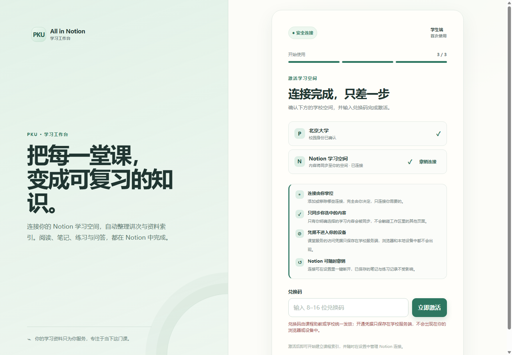
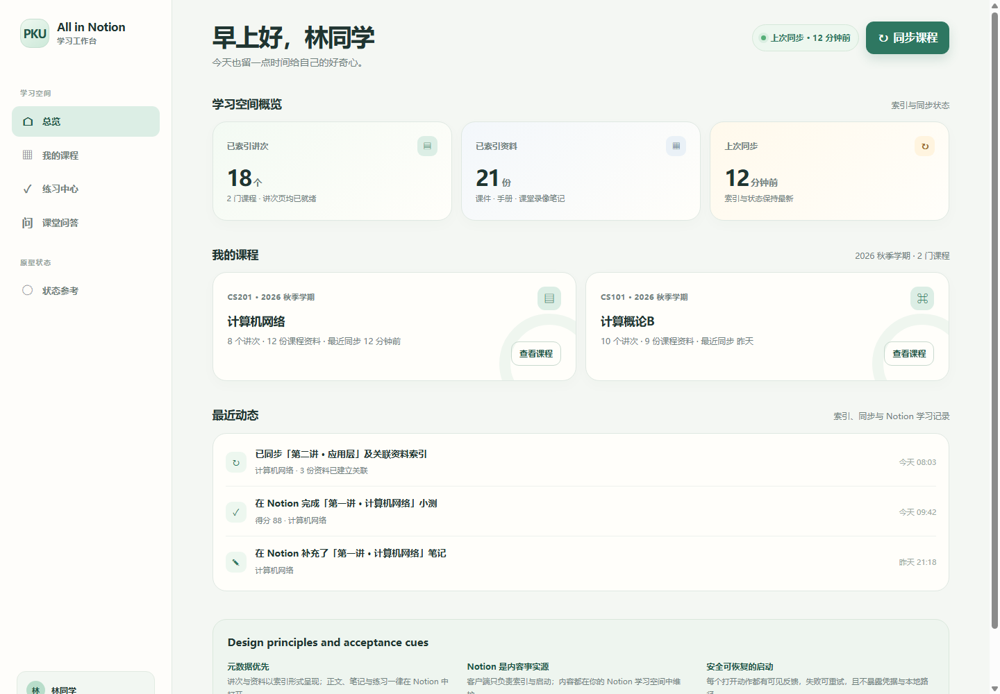
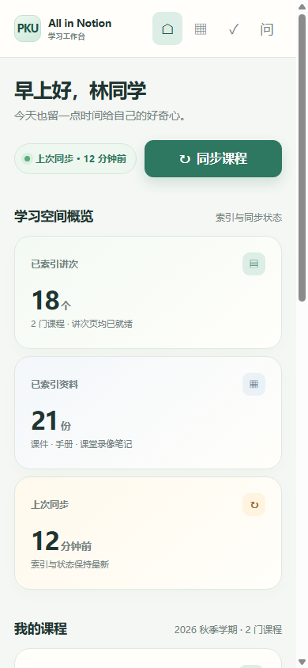
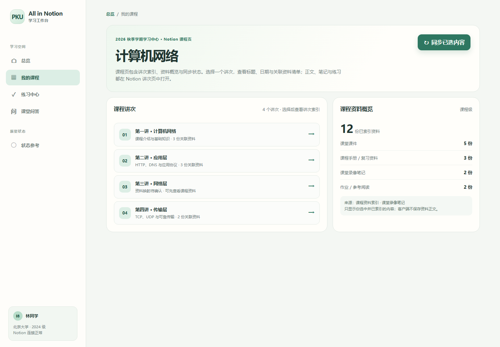
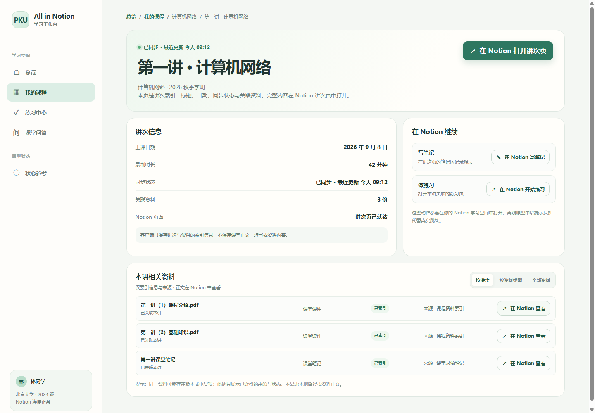
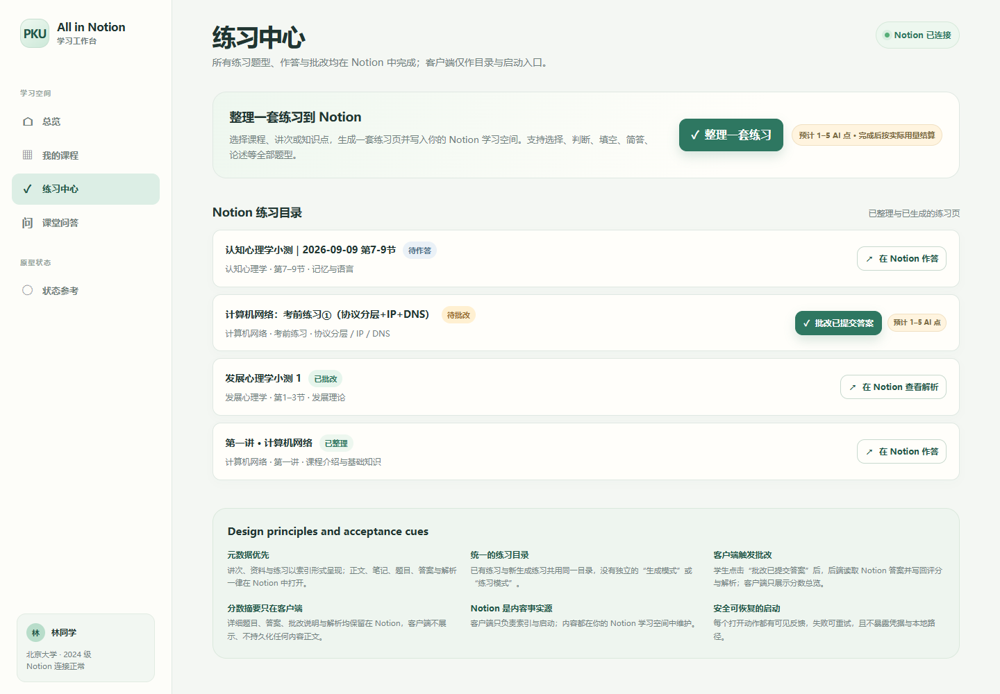
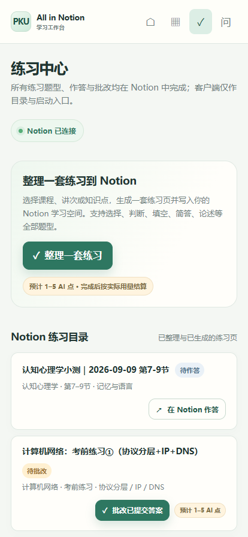
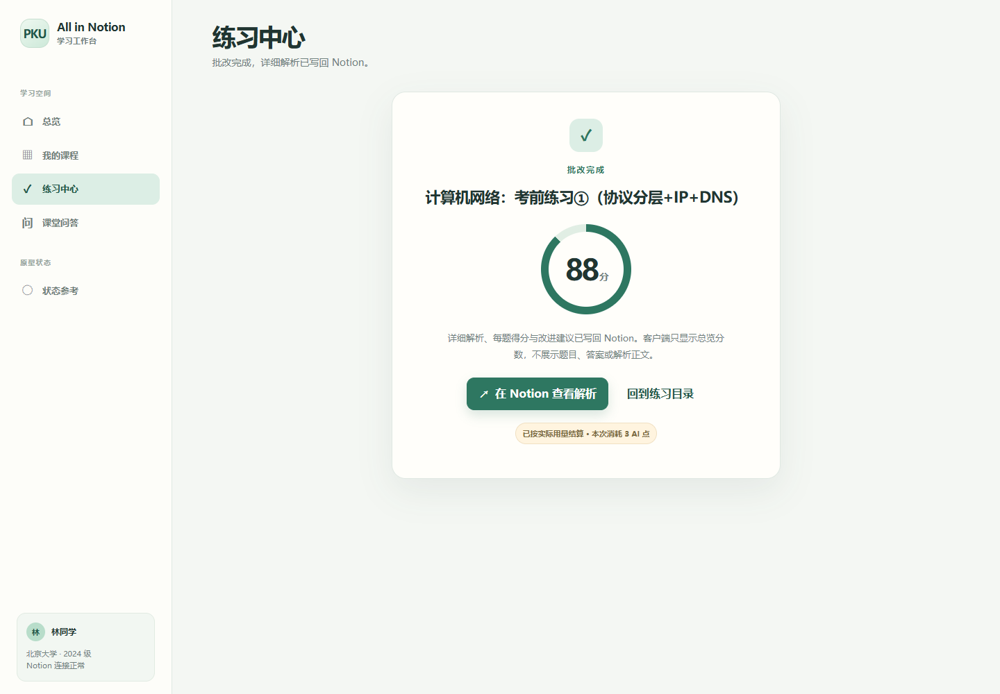
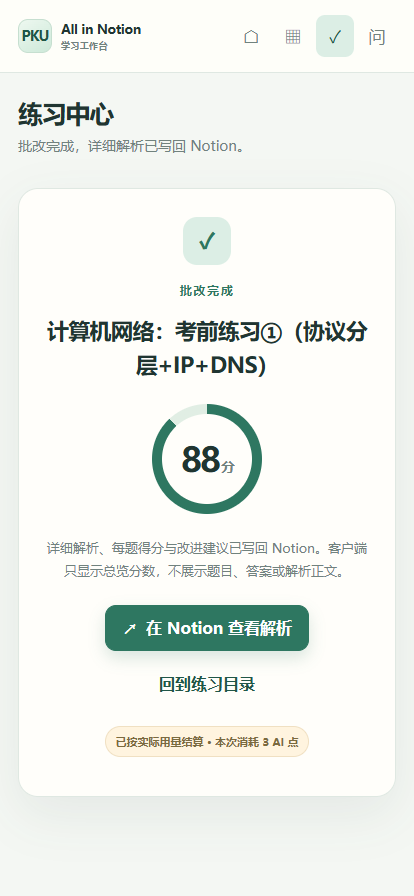

课在教学网
公告、课件、作业、课堂录像，每天自动同步。不用再凌晨去翻课程平台。
教学网上的课，会自动变成你 Notion 里的讲次、笔记和练习。客户端只负责打开那一页，学习发生在你自己的空间里。
公告、课件、作业、课堂录像，每天自动同步。不用再凌晨去翻课程平台。
阅读、划重点、写笔记、做练习、看解析，全部留在你已经熟悉的 Notion 页面。
本机打开工作台，看见索引和状态。正文、题目、答案，从来不会出现在浏览器里。
连上学校身份和 Notion，输入助教发的兑换码。转写和练习额度会显示在工作台里，用多少看多少。

已索引的讲次、资料、上次同步，还有最近在 Notion 里发生的事。想复习哪一门，点进去就好。


讲次列在左边，资料份数在右边。点开某一讲，只看到标题、日期和关联材料。完整内容，去 Notion 打开。

写笔记、开始练习、查看资料，工作台只负责跳到正确的 Notion 页面。没有内嵌编辑器，也没有第二套内容。

选一讲，生成一套混合题型，写进你的空间。作答、交卷、看解析，都不离开 Notion。回到工作台，只看见状态和分数。


批改完成，工作台只报一个总分和这次用掉的 AI 点。逐题说明已经写回 Notion，点一下就能看。


只同步你选中的课。课堂正文、转写和答案不进浏览器，也不落在别人的设备上。
教学网密码、兑换码、Notion 授权，都不会出现在工作台里。面板只在你自己的电脑上打开。
课堂转写按分钟计，整理和批改按 AI 点计。用完找助教补一张兑换码，没有隐藏扣费。
同步遇到问题，就写同步遇到问题。打开没有成功，就请你再试一次。不会用空白假装一切正常。
课从教学网来，知识留在 Notion。打开面板，继续上周没看完的那一讲。